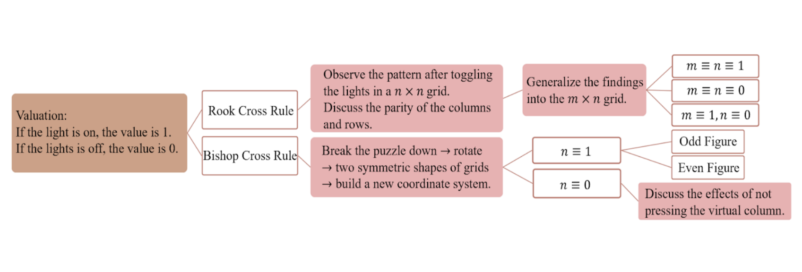

Cross Out the Lights──Lights Out Variations
何文璦、陳書蘋
Abstract
The original Lights Out Game consists of a 5×5 grid of lights. Pressing any of the lights will toggle it and the adjacent lights. The goal of the game is to switch all the lights off.
In this research, we designed the variations of Lights Out Game, including the “Rook Cross Rule” and the “Bishop Cross Rule”. We evaluated the states of the lights, and used modulo 2 in the congruence equations to show the parity of the sides of each puzzle and to prove the properties and theorems. We investigated the necessary condition and the solution in the solvable configurations, and further discussed the similarity between the rules.
Research Purpose
- Under Rook Cross Rule in a m×n puzzle, find the necessary and sufficient condition in the solvable configurations, and figure out a solution.
- Under Bishop Cross Rule in a n×n puzzle, find the necessary and sufficient condition in the solvable configurations, and figure out a solution.
Methodology
Conclusions and Future Work
Solvable configurations:
- Rook Cross Rule in a m×n grid of lights:
- m, n are both odd: The parity of the sum of values in each row and column is the same.
- m, n are both even: All.
- m is odd, n is even: The parity of the sum of state values in each row is the same.